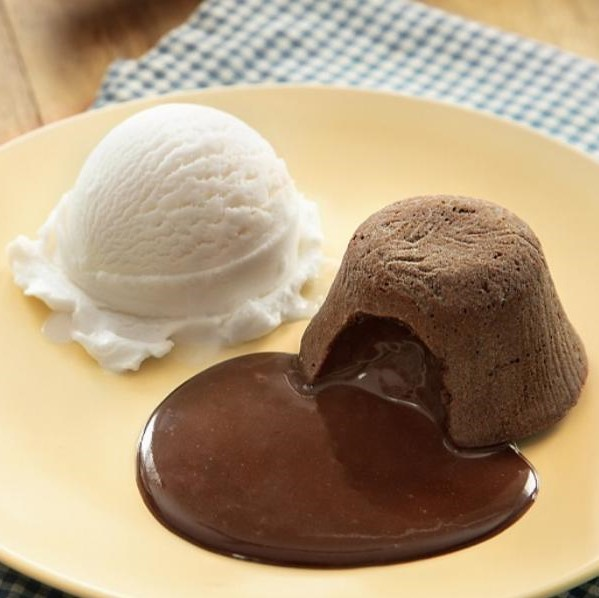
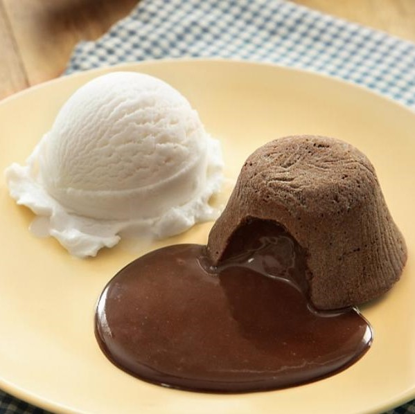
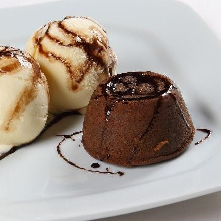
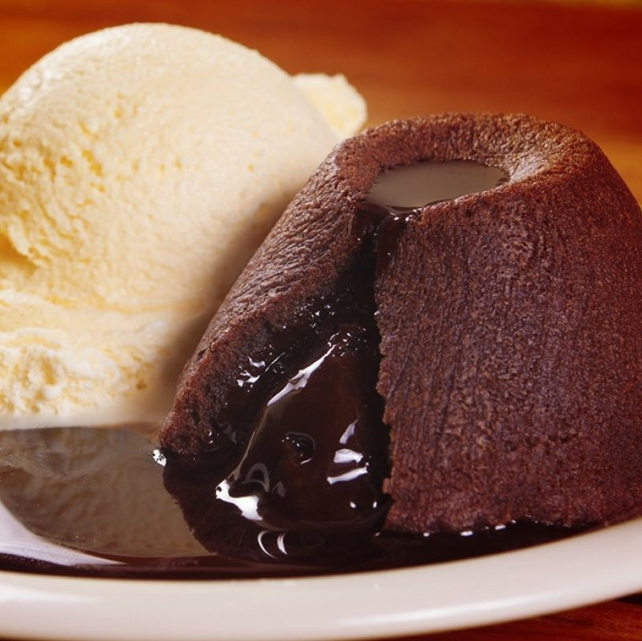

Ingredientes
- 150 g de Chocolate ao Leite
- 1/2 xícara (chá) de manteiga
- 3 ovos
- 2 gemas
- 1/2 xícara (chá) de açúcar
- 1 xícara (chá) de farinha de trigo peneirada
- Sorvete de creme (opcional)
Modo de Preparo
- Em um recipiente refratário, derreta em banho-maria o chocolate e a manteiga.
- Em outro recipiente, bata os ovos, as gemas e o açúcar até formar uma massa cremosa. Adicione a mistura de chocolate derretido e mexa bem.
- Acrescente a farinha de trigo aos poucos e mexa delicadamente, até incorporar tudo.
- Unte com manteiga e polvilhe com farinha de trigo 8 forminhas pequenas (10 cm de diâmetro) e distribua a massa entre elas. Leve ao forno médio-alto (200°C), preaquecido, por cerca de 10 minutos.
- Desenforme ainda quente sobre pratinhos individuais e sirva a seguir, acompanhado de uma bola de sorvete sabor creme.
PETIT GATEAU
Essa sobremesa chegou ao Brasil em meados dos anos 1990 quando os chefs de cozinha franceses, Erick Jacquin e Michel Brás, começaram a produzi-la em restaurantes de São Paulo.
 

Você sabia que: A traduz de petit gateau (francês) é um pequeno bolinho de chocolate, quentinho e, com um recheio que se esparrama pelo prato.

